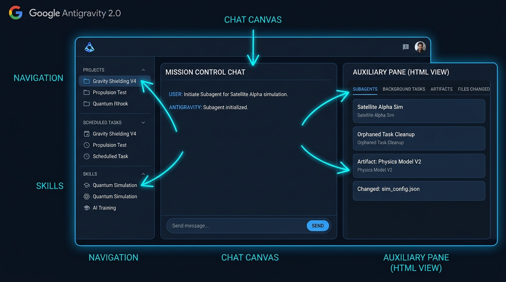
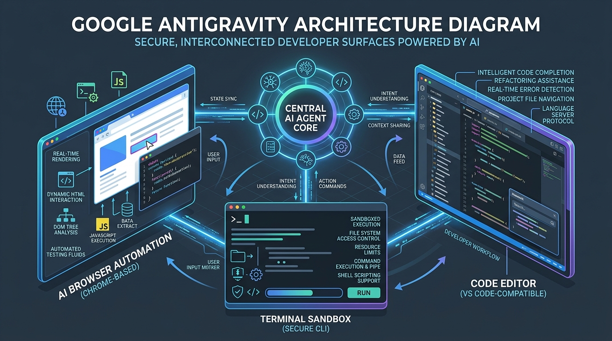
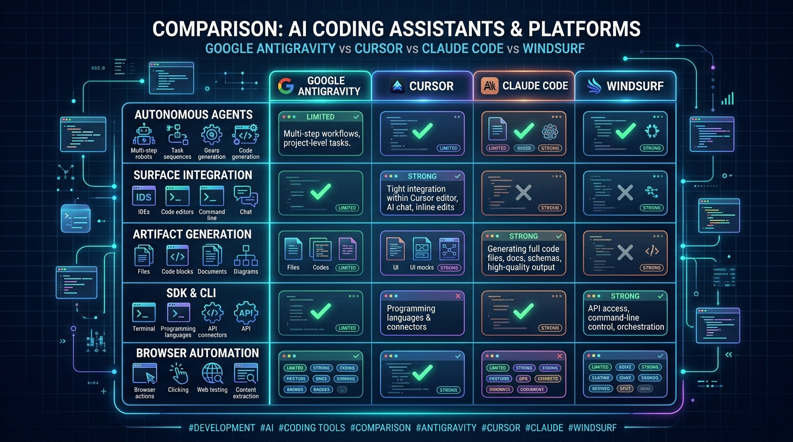
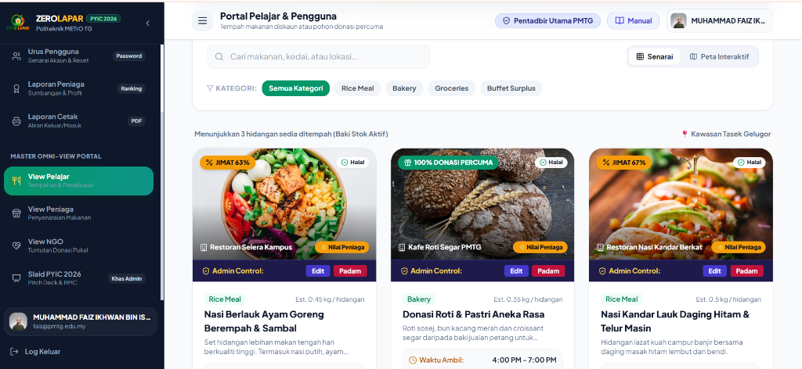
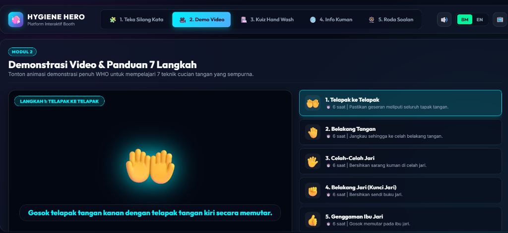
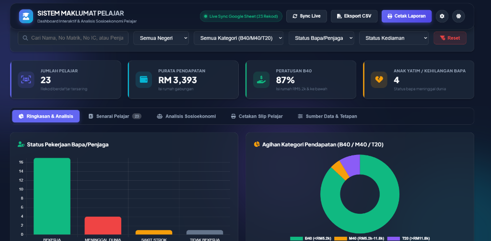

Selamat Datang Ke Google Antigravity! 🤖🚀
Hai! Saya ialah **AI Robot Assistant Google Antigravity**. Saya akan membimbing anda langkah demi langkah dari Bab 1 hingga Bab 17 untuk membina pelbagai sistem web moden secara 100% tanpa perlu coding sebaris kod pun!
Rajah Visual SOP Alur Kerja 6 Langkah Utama
Install Antigravity
Download installer rasmi & log masuk akaun Google.
Sembang ChatGPT & Salin Prompt
Minta ChatGPT bina Master Prompt & SALIN teksnya.
Cipta Folder & Copy Path
Salin pautan folder komputer & buka di Antigravity.
Tampal Prompt ke Antigravity
Tampal Master Prompt ke Antigravity & jana `index.html`.
Semak & Uji di Browser
Uji butang di browser & suruh Antigravity baiki ralat.
Publish ke GitHub Pages
Muat naik di GitHub Desktop untuk pautan Live Web URL!
"Mula-mula sekali, kita perlu memuat turun installer perisian Google Antigravity di komputer anda dan log masuk akaun Google untuk mengaktifkannya!"

Layari Portal Rasmi Muat Turun
Buka Chrome atau Edge di komputer anda. Taip alamat: https://antigravity.google/download dan tekan Enter.
Muat Turun Fail Installer
Klik butang Download for Windows (.exe) atau Download for macOS (.dmg). Fail akan disimpan di folder Downloads.
Jalankan Setup Wizard
Dwi-klik fail AntigravitySetup-x64.exe di folder Downloads. Tekan Next -> Install -> Finish.
Log Masuk Akaun Google
Buka perisian Antigravity, klik Log in with Google. Di pelayar web, pilih akaun Google anda dan tekan Allow / Benarkan.
"Buka ChatGPT.com dan beritahu ChatGPT apa yang anda mahu bina dalam Bahasa Melayu. Selepas ChatGPT menjana Master Prompt, tekan butang COPY!"
Rajah Visual Alur Kerja Bab 3: ChatGPT -> Salin Master Prompt
Taip idea sistem anda di ChatGPT dalam Bahasa Melayu harian.
ChatGPT menulis arahan lengkap di dalam kotak teks.
Klik ikon Copy pada kotak ChatGPT (atau tekan Ctrl+C).
Templat Master Prompt Universal (Salin Teks Ini Ke Google Antigravity)
Saya mahu membina [NYATAKAN SISTEM / WEBSITE / DASHBOARD ANDA DI SINI]. Saya tiada latar belakang coding langsung. Tolong buatkan satu fail index.html untuk sistem ini di Google Antigravity yang mengandungi: 1. Membina fail paparan utama index.html menggunakan Tailwind CSS CDN dengan reka bentuk moden berasaskan Mod Gelap (Dark Mode). 2. Menyediakan borang input maklumat dan semua butang (seperti Butang Simpan, Hantar, dan Padam) yang berfungsi 100%. 3. Menyimpan semua data yang dimasukkan ke dalam memori tempatan pelayar (localStorage) supaya data tidak hilang apabila halaman di-refresh. 4. Memastikan paparan kelihatan kemas dan mesra pengguna di skrin telefon bimbit serta komputer.
"Cipta folder projek baharu di C:\antigravity\, klik kanan > Copy as path, kemudian buka di Open Workspace Antigravity!"
Cipta Folder Baru
Buka File Explorer di C:\antigravity\ > Klik kanan > New > Folder > Namakan: SistemKehadiran.
Copy Path Folder
Klik kanan folder SistemKehadiran > pilih Copy as path (Salin pautan folder).
Tampal Path di Antigravity
Buka Antigravity > Klik Open Workspace > Tampal C:\antigravity\SistemKehadiran dan tekan Open.
"Tampal Master Prompt yang disalin dari ChatGPT ke ruang perbualan Antigravity, tekan Enter, dan saya akan menyiapkan fail index.html untuk anda!"
Rajah Visual Alur Kerja Bab 5: Tampal Master Prompt ke Antigravity
Pastikan folder projek anda di Bab 4 kelihatan aktif.
Tampal Master Prompt dari ChatGPT ke Chat Canvas (`Ctrl+V`).
AI Antigravity menulis fail `index.html` secara automatik!

"Dwi-klik index.html di browser. Jika ada butang tak berfungsi, beritahu saya di Antigravity dan saya akan perbaiki serta-merta!"
Rajah Visual Semakan & Ujian Sistem (3 Langkah Utama)
Templat Arahan Membaiki (Repair Prompts):
"Saya telah uji index.html di browser. Bila saya tekan butang 'Simpan', data tidak muncul dalam jadual. Tolong baiki fungsi butang Simpan ini supaya ia menyimpan data 100%."
"Pilih mana-mana prompt di bawah mengikut jenis sistem yang anda mahu bina (Sistem, Dashboard, Website, Game, Playbook) & tekan Salin!"
1Master Prompt: Membina Sistem (Kehadiran & Data Staf)
Kategori SistemBina Sistem Pengurusan Kehadiran Staf Harian di fail index.html menggunakan Tailwind CSS CDN (Mod Gelap). Keperluan Utama: 1. Borang pendaftaran: Nama Staf, Tarikh, Masa Clock-in, dan Pilihan Status (Hadir / Cuti / Sakit). 2. Butang "Simpan Kehadiran". 3. Jadual senarai kehadiran staf di bawah borang yang menyimpan data secara kekal di dalam localStorage. 4. Butang "Padam Rekod" pada setiap baris jadual untuk memadam rekod tertentu. 5. Petak carian (Search Bar) untuk menapis nama staf secara automatik.
2Master Prompt: Membina Dashboard (Admin Jualan & Carta Visual)
Kategori DashboardBina Admin Dashboard Pengurusan Jualan Moden di fail index.html menggunakan Tailwind CSS CDN (Mod Gelap). Keperluan Utama: 1. 4 Kad Statistik KPI: Total Jualan (RM50,000), Jumlah Pesanan (1,200), Pelanggan Baharu (850), dan Kadar Kejayaan (98.5%). 2. Carta Trend Jualan Bulanan interaktif menggunakan skrip Chart.js CDN. 3. Jadual Transaksi Terkini mengandungi ID Pesanan, Nama Pelanggan, Jumlah (RM), dan Badge Status (Hijau = Kejayaan, Kuning = Menunggu, Merah = Gagal).
3Master Prompt: Membina Laman Web (Landing Page Perniagaan)
Kategori WebsiteBina Landing Page moden perniagaan "Katering Enak Rasa" di fail index.html menggunakan Tailwind CSS CDN. Keperluan Utama: 1. Header & Navigation Bar dengan logo "Katering Enak Rasa" dan butang CTA "Hubungi Kami". 2. Hero Section: Tajuk gradient menawan, penerangan ringkas, dan butang tempahan. 3. 3 Kad Pakej Hidangan: Pakej Hemat (RM15/pax), Pakej Selera (RM25/pax), Pakej VIP (RM45/pax). 4. Borang Pertanyaan Tempahan: Nama, Nombor WhatsApp, Tarikh Majlis, dan Jumlah Tetamu. 5. Footer lengkap dengan lokasi pejabat dan pautan media sosial.
4Master Prompt: Membina Platform Game (Arcade Game HTML5)
Kategori GameBina Platform Permainan Mini (Mini-Game Arcade) di fail index.html menggunakan Tailwind CSS CDN. Keperluan Utama: 1. Tajuk Utama: "Pusat Permainan Arcade Interaktif". 2. Game 1: Permainan Tic-Tac-Toe (X dan O) 2 pemain yang boleh dimainkan secara interaktif di skrin. 3. Game 2: Permainan Kuiz Pengetahuan Umum dengan 5 soalan berbilang pilihan dan paparan markah akhir. 4. Paparan Skor Tertinggi (High Score Leaderboard) yang disimpan di dalam localStorage.
5Master Prompt: Membina Playbook (Laman Web Dokumentasi Tabbed)
Kategori PlaybookBina Laman Web Playbook Interaktif Tabbed di fail index.html menggunakan Tailwind CSS CDN. Keperluan Utama: 1. Header atas dengan tajuk "Playbook Panduan Pengguna". 2. Bar Navigasi Tab Horizontal di atas untuk bertukar bab (Bab 1, Bab 2, Bab 3, Bab 4, Bab 5). 3. Kandungan setiap bab dipaparkan mengikut tab yang dipilih secara serta-merta tanpa refresh halaman. 4. Butang "Bab Sebelumnya" dan "Bab Seterusnya" di bahagian bawah skrin untuk pembacaan lancar.
"Jom ikuti tutorial bergambar ini untuk membina Landing Page perniagaan katering anda yang pertama!"
Langkah demi Langkah Pembinaan (Visual Interaktif)
Buka File Explorer di C:\antigravity\ > Cipta folder: LandingPageKatering.
Klik kanan folder > pilih Copy as path > Tampal di Open Workspace Antigravity.
Tampal Master Prompt Katering di bawah & biarkan AI membina index.html.
Dwi-klik index.html untuk melihat laman web anda beraksi di pelayar Chrome!
Bina Landing Page perniagaan "Katering Enak Rasa" di fail index.html menggunakan Tailwind CSS CDN. Sertakan: 1. Header & Navbar dengan logo "Katering Enak Rasa" dan butang "Hubungi Kami". 2. Tajuk Utama: "Perkhidmatan Katering Majlis Perniagaan & Perkahwinan Terbaik". 3. 3 Kad Pakej Hidangan: Pakej Hemat (RM15/pax), Pakej Selera (RM25/pax), Pakej VIP (RM45/pax). 4. Borang Pertanyaan Tempahan: Nama, Nombor WhatsApp, Tarikh Majlis, dan Jumlah Tetamu. 5. Footer lengkap dengan lokasi pejabat dan pautan media sosial.
"Mari bina Sistem Kehadiran Staf yang boleh menyimpan data pendaftaran borang secara kekal di komputer anda!"
Bina Sistem Pengurusan Kehadiran Staf Harian di fail index.html menggunakan Tailwind CSS CDN (Mod Gelap). Keperluan Utama: 1. Borang pendaftaran: Nama Staf, Tarikh, Masa Clock-in, dan Pilihan Status (Hadir / Cuti / Sakit). 2. Butang "Simpan Kehadiran". 3. Jadual senarai kehadiran staf di bawah borang yang menyimpan data secara kekal di dalam localStorage. 4. Butang "Padam Rekod" pada setiap baris jadual untuk memadam rekod tertentu. 5. Petak carian (Search Bar) untuk menapis nama staf secara automatik.
"Bina Admin Dashboard yang cantik berserta 4 kad statistik KPI dan carta graf jualan bulanan interaktif!"
Bina Admin Dashboard Pengurusan Jualan Moden di fail index.html menggunakan Tailwind CSS CDN (Mod Gelap). Keperluan Utama: 1. 4 Kad Statistik KPI: Total Jualan (RM50,000), Jumlah Pesanan (1,200), Pelanggan Baharu (850), dan Kadar Kejayaan (98.5%). 2. Carta Trend Jualan Bulanan interaktif menggunakan skrip Chart.js CDN. 3. Jadual Transaksi Terkini mengandungi ID Pesanan, Nama Pelanggan, Jumlah (RM), dan Badge Status (Hijau = Kejayaan, Kuning = Menunggu, Merah = Gagal).
"Jangan risau jika berlakunya ralat! Salin sahaja mana-mana arahan membaiki 5 ralat lazim di bawah ini dan tampal kepada saya!"
Salin dan tampal arahan ini ke perbualan Antigravity:
Saya dah uji index.html di browser. Bila saya tekan butang 'Simpan', tiada apa yang berlaku dan data tidak dipaparkan. Tolong baiki fungsi butang Simpan ini supaya ia menyimpan data 100%.
Salin dan tampal arahan ini ke perbualan Antigravity:
Bila saya refresh halaman web, semua data yang saya isi tadi telah hilang. Tolong baiki supaya semua data disimpan di dalam localStorage secara kekal.
Salin dan tampal arahan ini ke perbualan Antigravity:
Paparan borang kelihatan terlalu rapat dan bertindih bila dibuka di skrin telefon. Tolong kemaskan reka bentuk Tailwind CSS supaya mesra skrin telefon bimbit.
Salin dan tampal arahan ini ke perbualan Antigravity:
Fail index.html memaparkan skrin putih kosong di browser. Tolong imbas ralat di dalam kod dan baiki supaya paparan muncul semula dengan betul.
Salin dan tampal arahan ini ke perbualan Antigravity:
Gambar di bahagian Hero Section tidak muncul dan menunjukkan ikon rosak. Tolong gantikan pautan imej tersebut dengan imej placeholder Unsplash yang sah dan cantik.
"Sediakan akaun GitHub.com percuma & muat turun aplikasi visual GitHub Desktop untuk proses penerbitan laman web awam!"
Cipta Akaun GitHub Percuma
Layari https://github.com/signup. Masukkan e-mel anda, cipta kata laluan (*password*), dan nama pengguna (*username*). Selesaikan pengesahan e-mel.
Muat Turun Aplikasi GitHub Desktop
Layari https://desktop.github.com/. Klik Download for Windows (atau Mac) dan jalankan pemasangan di komputer anda.
Log Masuk di GitHub Desktop
Buka aplikasi GitHub Desktop, klik Sign in to GitHub.com. Pelayar web anda akan mengesahkan pendaftaran log masuk secara automatik!
"Buka GitHub Desktop, pilih folder projek anda di komputer, dan tekan butang biru Publish Repository!"
Tambah Folder Projek di GitHub Desktop
Buka GitHub Desktop > Klik menu File > pilih Add Local Repository... > Klik Choose... > Pilih folder projek anda di komputer (contoh: C:\antigravity\LandingPageKatering).
Cipta Repositori Baharu
Jika muncul dialog "Create a Repository", masukkan nama repositori (contoh: katering-enak-rasa) dan klik Create Repository.
Muat Naik Ke GitHub.com (Publish)
Klik butang biru Publish repository di bahagian atas > Nyah-tanda (*uncheck*) "Keep this code private" > Klik Publish Repository. Semua fail anda kini selamat diunggah ke GitHub!
"Aktifkan GitHub Pages di Settings > Pages, tukar branch ke `main` & dapatkan pautan laman web awam anda!"
Your site is live at: https://username.github.io/katering-enak-rasa/

Buka Repositori di GitHub.com
Di aplikasi GitHub Desktop, klik butang View on GitHub (atau tekan Ctrl+Shift+G). Pelayar web anda akan membuka repositori di GitHub.com.
Buka Menu Settings > Pages
Di bahagian atas repositori, klik tab Settings (ikon roda gerigi). Di menu sebelah kiri (*sidebar*), tatal ke bawah dan klik pada Pages.
Tukar Branch Ke `main` & Simpan
Di bawah bahagian Branch, tukar pilihan daripada None kepada `main` (atau `master`). Klik Save.
Salin Pautan Awam (Live URL)
Tunggu 1 hingga 2 minit, kemudian refresh halaman tersebut. Salin pautan hijau https://username.github.io/nama-projek/. Pautan ini kini sedia dihantar kepada pelanggan atau dikongsi di media sosial!
"Di masa hadapan, hanya minta saya buat perubahan di Antigravity, kemudian tekan Push Origin di GitHub Desktop!"
Cara Kemas Kini Laman Web Di Masa Hadapan:
- Buka Antigravity dan pilih folder projek anda di komputer.
- Taip arahan perubahan di perbualan (contoh: "Tolong tambah butang WhatsApp di bahagian bawah").
- Selepas Antigravity siap mengemaskini `index.html`, buka GitHub Desktop.
- Masukkan mesej ringkas di kotak Summary dan tekan Commit to main -> Push origin.
- Laman web awam anda di GitHub Pages akan dikemaskini secara automatik di internet dalam beberapa minit!
Tahniah! Anda Kini Bersedia Membina Sistem Idaman Anda! 🚀
Dengan alur kerja SOP 6 langkah ini, anda boleh membina seberapa banyak laman web dan sistem yang anda inginkan tanpa perlu belajar coding!
"Saksikan rakaman video tutorial rasmi di bawah ini untuk melihat demo pengoperasian Antigravity secara praktikal!"
🎥 Rakaman Video Panduan Operasi Google Antigravity
Saksikan rakaman video tutorial rasmi langkah demi langkah menunjukkan cara pengoperasian penuh Google Antigravity untuk pengguna Non-Coder.
"Lihat 3 sistem sebenar yang dah berjaya dibangunkan di bawah ini! Anda juga boleh bina sistem seperti ini!"
🖼️ Lampiran Contoh Sistem Yang Telah Dibangunkan
Koleksi 3 bukti sebenar sistem pengurusan, portal awam, dan aplikasi interaktif yang telah berjaya dibangunkan 100% menggunakan Google Antigravity tanpa sebaris kod pun!
ZEROLAPAR Politeknik METRO TG (Portal Pelajar & Pengguna)

View Pelajar, View Peniaga, View NGO, dan Pentadbir Utama PMTG.
Kad hidangan diskaun (Jimat 63%) & 100% Donasi Makanan Percuma.
Fungsi Edit & Padam hidangan secara langsung tanpa sentuh kod.
HYGIENE HERO (Platform Interaktif Booth & Kuiz)

Teka Silang Kata, Demo Video, Kuiz Hand Wash, Info Kuman, Roda Soalan.
Panduan 7 Teknik Cucian Tangan Sempurna berserta animasi interaktif.
Butang penukaran bahasa serta-merta di bahagian header atas.
SISTEM MAKLUMAT PELAJAR (Dashboard Analisis Sosioekonomi)

Pautan data automatik 23 Rekod Pelajar & Eksport CSV / Cetak Laporan PDF.
Jumlah Pelajar (23), Purata Pendapatan (RM3,393), % B40 (87%), Anak Yatim (4).
Carta Bar Status Pekerjaan Penjaga & Carta Pie Agihan B40/M40/T20.
"Hai! Isikan 9 maklumat asas di bawah, kemudian tekan butang **⚡ Jana Master Prompt Antigravity**. Saya akan membina Master Prompt lengkap yang sempurna untuk anda tampal terus ke Google Antigravity!"